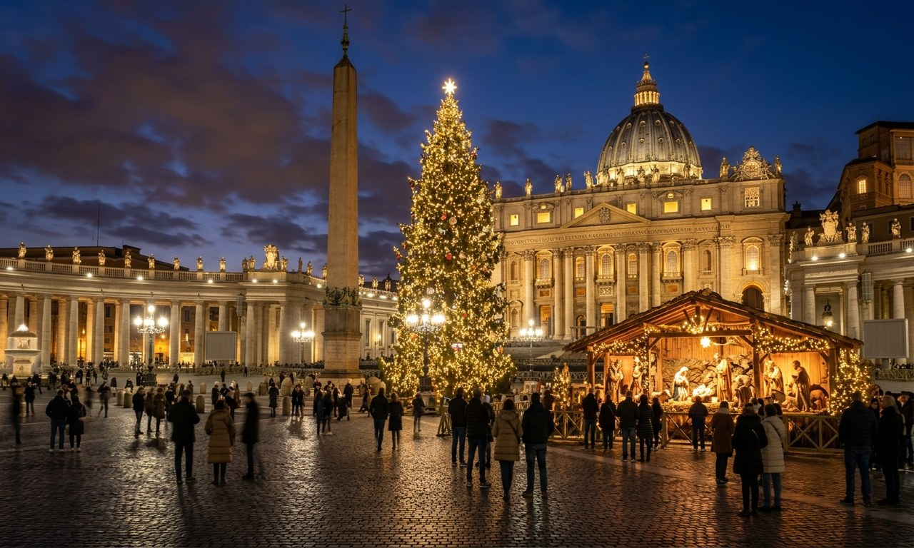
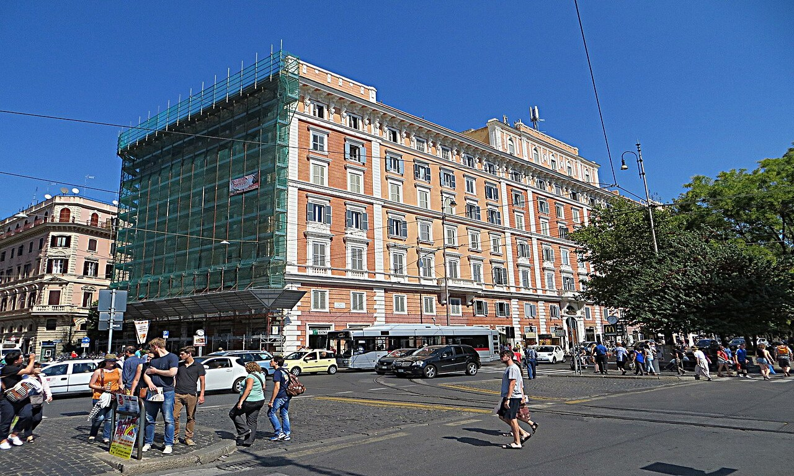
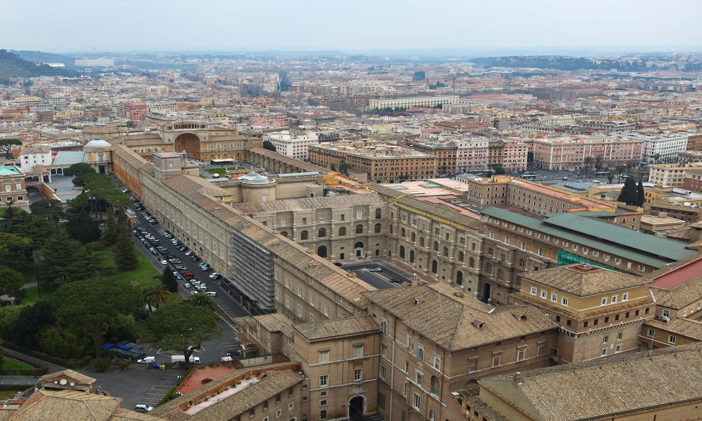
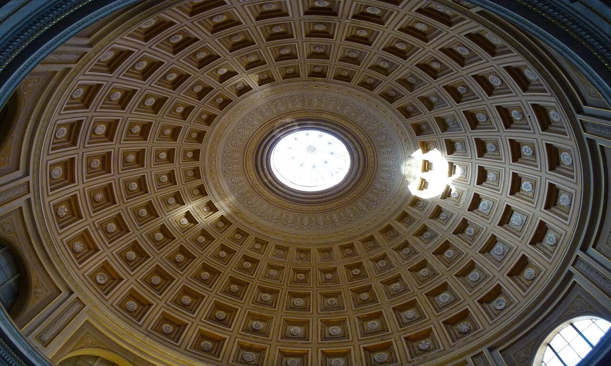
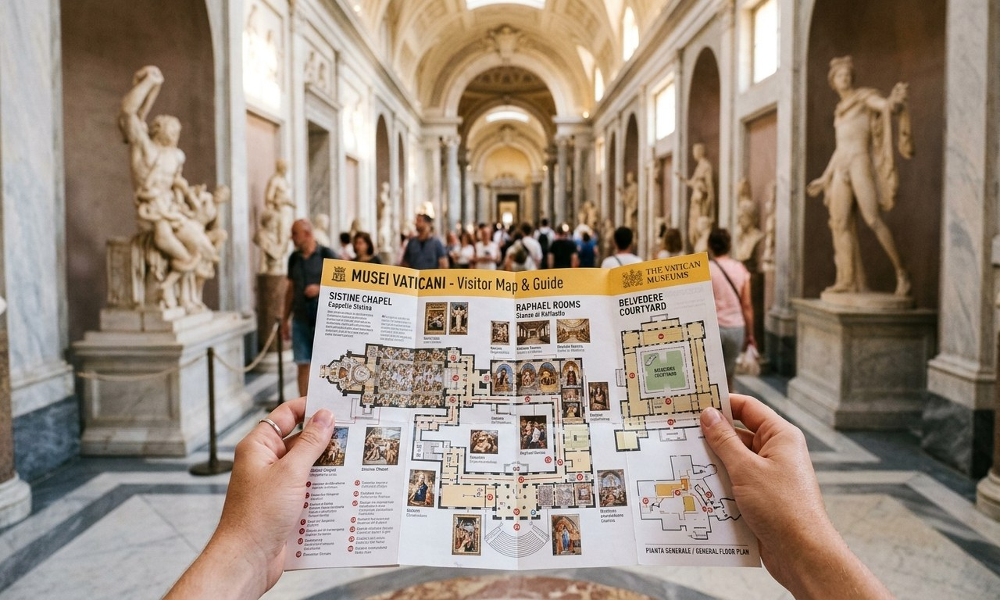
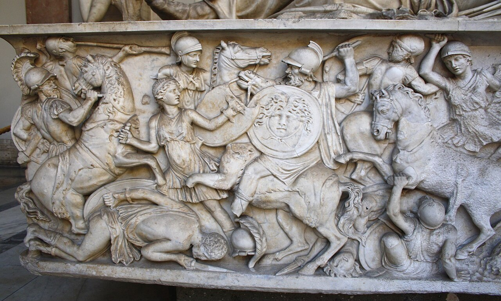
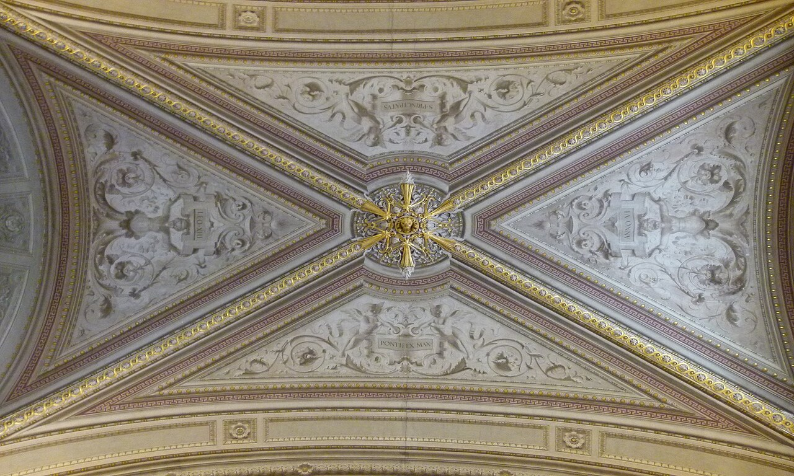
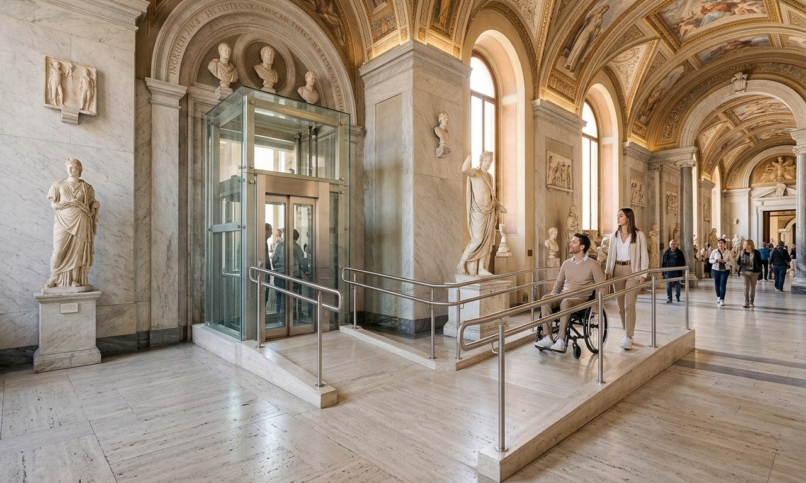
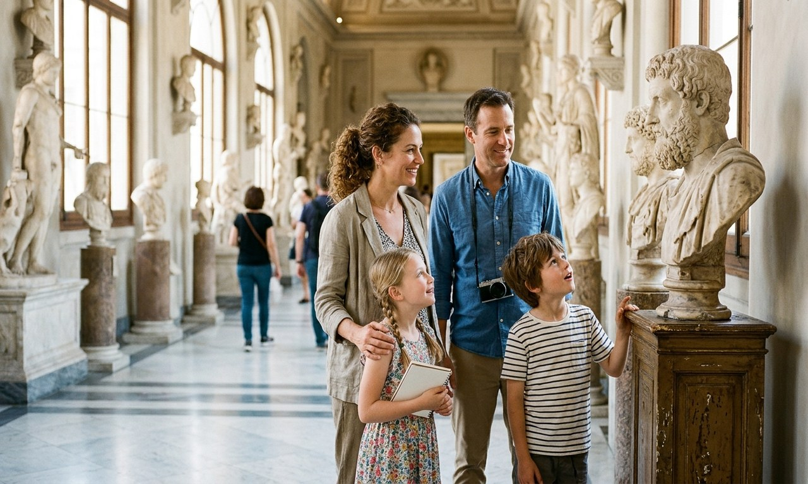

Essential
Best Time to Visit the Vatican Museum
The best time to visit the Vatican Museums is early morning or late afternoon on a quiet weekday. See the best days, months, and times to avoid the crowds.
Everything you need for an unforgettable, seamless visit to the papal palaces and Sistine Chapel. Discover verified 2026 opening hours, crowd-free entry windows, transit directions, strict dress code rules, and insider strategies from 19 thoroughly researched visitor guides.

Official €25 tickets sell out weeks ahead between May and September. Online timed reservation is essential to skip the 2-hour on-site line.
Target the 8:00 AM opening slot or late afternoon after 3:00 PM. Tuesday through Thursday are noticeably calmer than Mondays and Saturdays.
Strict modesty dress code enforced at entry, Sistine Chapel, and St. Peter's. Sleeveless tops and shorts above the knee are turned away.
Every museum ticket includes the Sistine Chapel at the end of the one-way 3–4 km route. Free cloakroom for bags larger than 40×35×15 cm.
Carefully researched visitor guides written by Italian travel specialists to help you navigate hours, tickets, queues, dress code rules, and logistics.
The best time to visit the Vatican Museums is early morning or late afternoon on a quiet weekday. See the best days, months, and times to avoid the crowds.

Christmas Mass at the Vatican 2026: the Midnight Mass is Dec 24 at 10pm, and the Urbi et Orbi blessing Dec 25 at noon. How to attend, get tickets, and watch online.

Where to stay near the Vatican: the best areas such as Borgo and Prati, plus hotels for every budget from luxury to guesthouses, all within walking distance.

How long to spend at the Vatican? Plan 2 to 3 hours for the Museums and Sistine Chapel, about an hour more for St. Peter's, and a half-day for the whole Vatican.

How to get to the Vatican Museums: take Metro Line A to Ottaviano or Cipro, or bus 49. See every route by metro, bus, taxi, car, and from Termini or the airport.

Is the Vatican Museums worth it? Yes for most first-time visitors, for the Sistine Chapel and Raphael Rooms, but only if you plan around the crowds. An honest look.

The things to know before visiting the Vatican Museums: book skip-the-line ahead, dress for the code, wear comfy shoes, and the rules that catch people out.

The Vatican dress code is one rule: cover your shoulders and knees. No shorts, sleeveless tops, or short skirts. Here is what to wear, for men and women, to get in.

The Vatican Museums entrance is on Viale Vaticano, on the north side of the walls, a short walk from Ottaviano metro. Here is how to find it and skip the queue.

The Vatican Museum official website is tickets.museivaticani.va. Here is what it sells, how to book, the €5 booking fee, and what to do when a date is sold out.

The official Vatican Museums opening hours for 2026: open Monday to Saturday, 8 am to 8 pm, with last entry at 6 pm. See closed days and the free last Sunday.

Vatican Museums FAQs with quick answers on tickets, prices, opening hours, the dress code, the Sistine Chapel, and visiting Vatican City, all in one place.

The Vatican Museums are free on the last Sunday of each month, 9am to 2pm. See the 2026 free Sunday dates, how early to queue, and whether it is really worth it.

A guide to the Vatican Museums map: how the galleries are laid out, the one-way route to the Sistine Chapel, and where to download or pick up the official map.

Vatican Museums photos and a visual walkthrough of the highlights, from the spiral staircase to the Sistine Chapel, plus the rules on where you can take photos.

Vatican Museums vs Sistine Chapel: are they the same? No. The Sistine Chapel is a room inside the Vatican Museums, so one ticket covers both. Here's how it all fits.

Are the Vatican Museums wheelchair accessible? Yes: free entry for disabled visitors, free wheelchair loan, a step-free route, and lift access to the Sistine Chapel.

Visiting the Vatican with kids: under-6s go free, go at opening, and head for the animal statues, Popemobiles and mummies. Tips to keep children happy, plus tickets.

Where to eat near the Vatican without the tourist traps: walk into Prati for the best pizza, Roman trattorias, gelato and coffee. Here are the local picks worth it.
How much time do you actually need? Sourced directly from our visitor timing research, select your preferred itinerary to see realistic step-by-step milestones.
Arrive 15 mins before entry slot at Viale Vaticano. Pass security, cross Pinecone Courtyard, and walk through the Candelabra & Tapestries galleries.
Walk the 120-metre gilded Gallery of Maps and explore the 4 Raphael Rooms, featuring the iconic fresco The School of Athens.
Spend 20–30 minutes admiring Michelangelo's ceiling and The Last Judgment, then exit via Giuseppe Momo's famous 1932 double-helix spiral staircase.
Take the core highlights circuit through the Pio-Clementino classical sculptures, Gallery of Maps, Raphael Rooms, and Sistine Chapel with fewer morning crowds.
Head to St. Peter's Basilica to admire Michelangelo's Pietà, Bernini's 29-metre bronze Baldachin over St. Peter's tomb, and the monumental papal altar.
Stroll Bernini's elliptical colonnade of 284 Doric columns, view the 4,000-year-old Egyptian obelisk, and explore Borgo Pio for lunch.
Start in the Pinacoteca picture gallery (Raphael, Leonardo da Vinci, Caravaggio), followed by the Gregorian Egyptian Museum, Raphael Rooms, and Sistine Chapel.
Climb the 551 steps (or lift + 320 steps) to the top of Michelangelo's dome for 360-degree views over Rome, then tour the grottos and basilica.
Conclude with a booked minibus or walking tour of the 23-hectare Vatican Gardens, or an advance-reserved Vatican Necropolis (Scavi) tour under the basilica.
Avoid fines, turned-away entries, and wasted time with these 4 official rule summaries.
Security checkpoints operate with metal detectors and airport-grade luggage scanners on Viale Vaticano.
Strict religious and preservation regulations apply across all 54 papal galleries.
Vatican City has separate entrances for the Museums and St. Peter's Basilica.
Compare the official base prices with authorized fast-track booking options.
Actionable advice tested and proven across hundreds of real museum visits.
Entering at 8:00 AM gives you a 60–90 minute window before tour bus groups converge, allowing near-private viewing of the Gallery of Maps.
Mondays absorb weekend spillover, Wednesdays have morning Papal Audiences, and Saturdays are peak domestic tourist days. Midweek is calmest.
Even on scorching summer days in Rome, pack a lightweight scarf or shawl in your daypack to drape over bare shoulders at the checkpoint.
Museum Wi-Fi can be patchy inside thick Renaissance walls. Download your audio app guides and museum maps before leaving your hotel.
Free entry on the last Sunday draws queues that wrap 1.5 km around the Vatican walls. If attending, line up by 7:30 AM sharp.
Aggressive street promoters outside Ottaviano metro often resell unauthorized vouchers at 2x the price. Always book through verified providers.
Full breakdown of tickets, guided tours, and VIP options sourced from our ticket price registers.
| Ticket Type | Price (2026) | Sistine Chapel | St. Peter's Basilica | Guide Type | Cancellation | Booking |
|---|---|---|---|---|---|---|
| Official Standard Entry | €25 (€20+€5) | ✔ Included | Free entry (separate queue) | Self-guided | Non-refundable | Official Portal |
| Fast-Track Entry + Audio App | From €33 | ✔ Included | Free entry (separate queue) | Digital Audio App | Free up to 24h | Book Ticket |
| Guided Tour + St. Peter's | From €49–€125 | ✔ Included | ✔ Direct Basilica Access | Licensed Art Historian | Free up to 24h | Book Tour |
| Early Morning VIP Access (8 AM) | From €92–€130 | ✔ Empty Chapel | ✔ Included | Live Guide + Breakfast | Free up to 24h | Book VIP |
| Vatican & Colosseum Combo | From €141 | ✔ Included | ✔ Included + Colosseum | Full-day Guided | Free up to 24h | Book Combo |
Quick, accurate answers from our Vatican visitor research team.
The Vatican Museums are open Monday to Saturday from 8:00 AM to 8:00 PM, with the last admission at 6:00 PM. Visitors are asked to begin exiting the galleries 30 minutes before closing (around 7:30 PM). The museums are closed on Sundays, except the last Sunday of each month when entry is free from 9:00 AM to 2:00 PM (last entry 12:30 PM).
No. There is no separate ticket for the Sistine Chapel. The chapel is located at the very end of the Vatican Museums route, so any valid Vatican Museums admission ticket or guided tour grants full access to the Sistine Chapel.
The Vatican enforces a strict modesty dress code: shoulders and knees must be completely covered for both men and women. Sleeveless shirts, tank tops, shorts above the knee, short skirts, and hats are strictly forbidden. Security guards turn away improperly dressed visitors at the entrance, the Sistine Chapel, and St. Peter's Basilica.
Small handbags and compact daypacks are allowed. Any bag or backpack larger than 40×35×15 cm, large umbrellas with pointed metal tips, tripods, and filming equipment must be checked into the free cloakroom near the entrance. You must retrieve your items at the same entrance upon exiting.
Take Metro Line A (Orange) towards Battistini and get off at Ottaviano (approx. 7-minute walk to Viale Vaticano) or Cipro (8-minute walk). From Rome Termini railway station, Metro Line A takes approximately 10 minutes. Bus 49 stops directly in the square in front of the museum entrance.
Entry to St. Peter's Basilica is always 100% free for everyone, but requires passing through airport-style security in St. Peter's Square (where queues can take 60–90 minutes). Licensed guided tours often have access to a direct passage from the Sistine Chapel straight into the Basilica, avoiding the square queue.
Non-flash photography for personal use is permitted throughout the standard Vatican Museum galleries and courtyards. However, all photography and video recording are strictly prohibited inside the Sistine Chapel. Staff enforce this rule rigorously and may delete unauthorized images.
Plan for 2 to 3 hours for a highlights visit covering the Pio-Clementino sculptures, Gallery of Maps, Raphael Rooms, and Sistine Chapel. If you also want to visit St. Peter's Basilica and climb the Dome, budget 4 to 5 hours for the full experience.